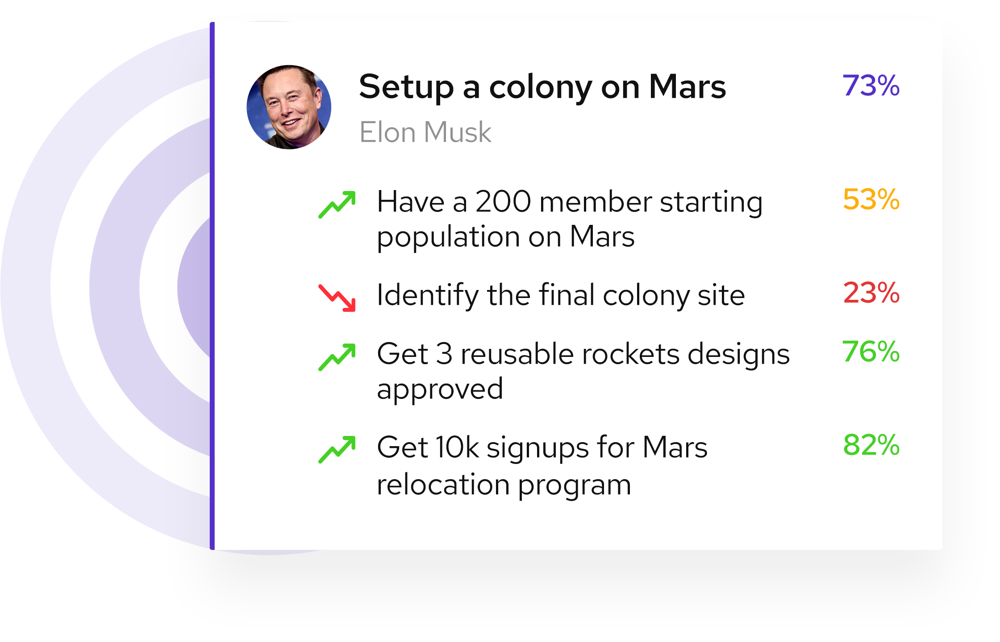

Drive your teams into High Performance Mode with OKRs

"Communicating and managing OKRs on culture.easy is helping
slay align on high priority goals"
Richa Singh
Senior HR manager, SLAY Coffee, India
"culture.easy's simple-designed OKR feature was key to
the mind-shift towards high performance execution"
Ashok G
Founder & CEO, Automate.io, USA
"My first 5 minutes every day goes into understanding
how my team is executing to the planned goals. I am happy
that I'm looking at culture.easy and not a google sheet "